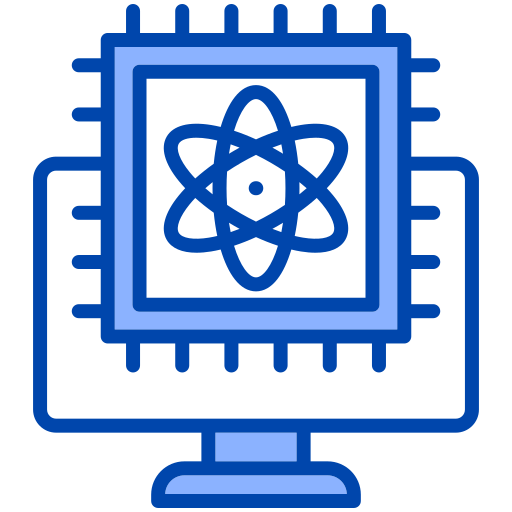
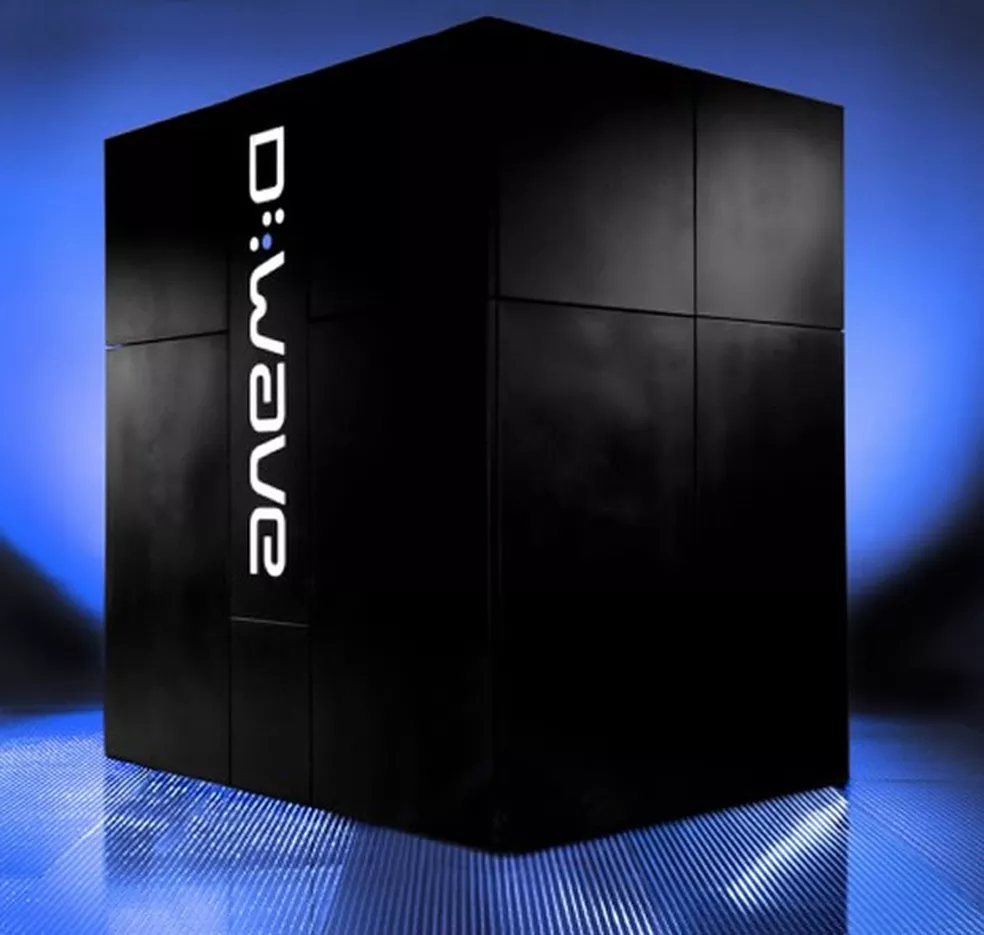

Aplicações Existentes de Computação Quântica
A computação quântica usa qubits em vez de bits, permitindo
processamento mais rápido e avançado. Suas aplicações incluem
criptografia ultra-segura, simulações e otimização de problemas
complexos.


Otimização
A computação quântica oferece um potencial revolucionário para
resolver problemas de otimização complexos que desafiam os métodos
tradicionais. Os computadores quânticos podem analisar grandes
conjuntos de dados e encontrar soluções eficientes para problemas
como rotas de entrega, planejamento de recursos e design de redes
logísticas. A capacidade de explorar múltiplas soluções
simultaneamente permite alcançar resultados que podem reduzir
custos e economizar tempo.
Finanças e Análise de Dados
A computação quântica está prestes a transformar o setor financeiro
ao fornecer a capacidade de analisar dados complexos e extensos em
tempo real. Essa tecnologia pode melhorar a previsão de mercado, a
gestão de riscos e a elaboração de estratégias de investimento mais
eficazes. Algoritmos quânticos avançados podem ser utilizados para
identificar tendências de mercado com maior precisão, otimizar
carteiras de investimentos e até mesmo simular cenários econômicos
para auxiliar na tomada de decisões. Com a computação quântica, as
instituições financeiras podem obter uma vantagem competitiva,
tomando decisões mais informadas e ágeis em um mercado cada vez mais
dinâmico.
Pesquisa Científica
A computação quântica está revolucionando a pesquisa científica ao
possibilitar a simulação e análise de sistemas complexos que antes
eram praticamente impossíveis de estudar com métodos tradicionais.
Essa tecnologia permite explorar fenômenos quânticos em física,
descobrir novos materiais com propriedades únicas e modelar
processos químicos detalhados. Além disso, os computadores quânticos
podem ser usados para simular comportamentos biológicos complexos,
acelerando pesquisas em genética, biotecnologia e farmacêutica. Em
astrofísica, a computação quântica pode ajudar na simulação de
buracos negros e na compreensão da origem do universo.
Simulação
A computação quântica oferece uma nova dimensão de simulação,
permitindo modelar sistemas complexos com uma precisão incomparável.
Computadores quânticos podem simular processos físicos e químicos a
nível molecular, proporcionando insights fundamentais em áreas como a
ciência dos materiais, a química computacional e a biologia molecular.
Ao simular reações químicas, é possível prever a estabilidade de novos
compostos, acelerar a descoberta de novos medicamentos e entender o
comportamento de proteínas e enzimas. Em física, a computação quântica
permite estudar fenômenos quânticos complexos e modelar sistemas de
partículas, contribuindo para avanços em materiais exóticos e
tecnologias emergentes.
Inteligência Artificial
A combinação de inteligência artificial e computação quântica tem
potencial de melhorar o atual Machine Learning. Os computadores
quânticos têm a capacidade de processar grandes volumes de dados
complexos de maneira mais eficiente do que os computadores clássicos,
possibilitando algoritmos de aprendizado mais rápidos e precisos. Isso
pode levar a avanços significativos em reconhecimento de padrões,
análise de dados e previsão de comportamentos. Aplicações incluem
otimização de modelos de IA, treinamento de redes neurais mais
robustas e processamento de dados com eficiência energética
aprimorada. Separamos um curso muito interessante sobre computação
quântica que aborda sobre esses assuntos mais detalhadamente,
dê uma olhada!